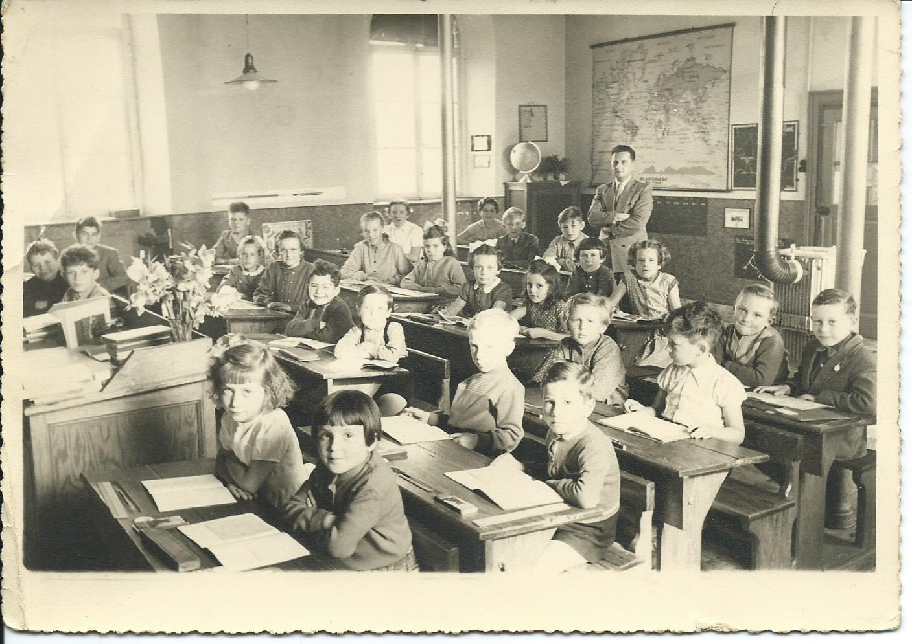
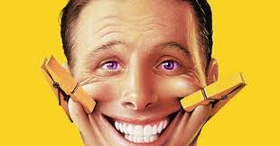
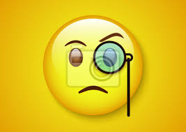
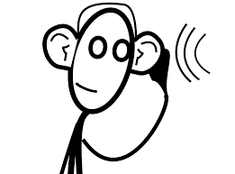
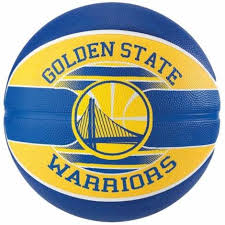
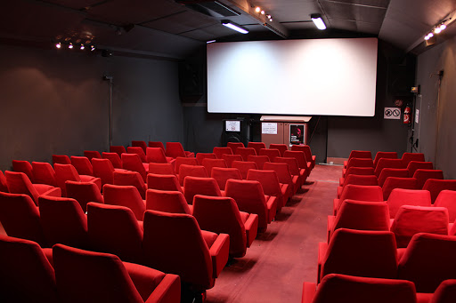

Je suis:
En rupture avec le schéma scolaire tranditionnel

Souriant & Sociable

Curieux & A l'écoute


ce que je recherche dans ma formation et mon futur travail
le dépassement de soi, l'accomplissement de tâches nouvelles, et le développement personnel
Centres d'intérêts
- Jeux vidéos
- sport

- cinéma, série, manga

Retour